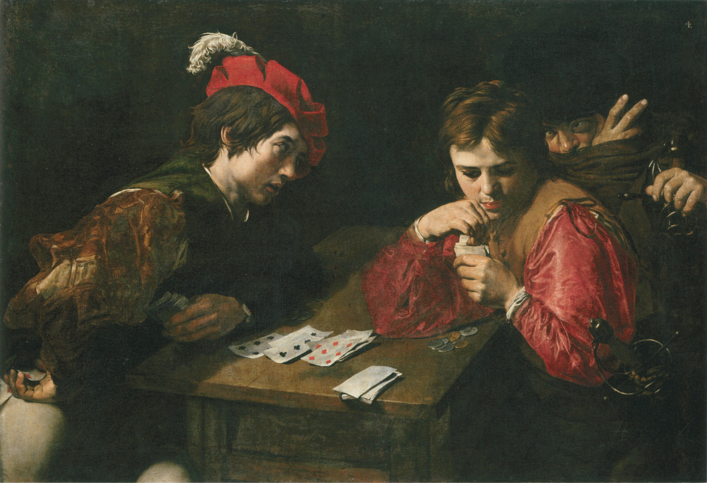
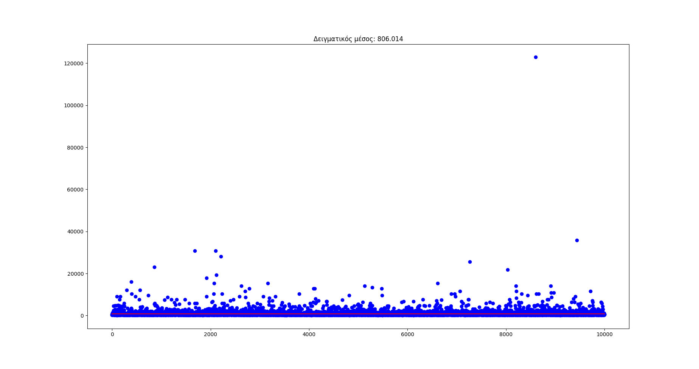
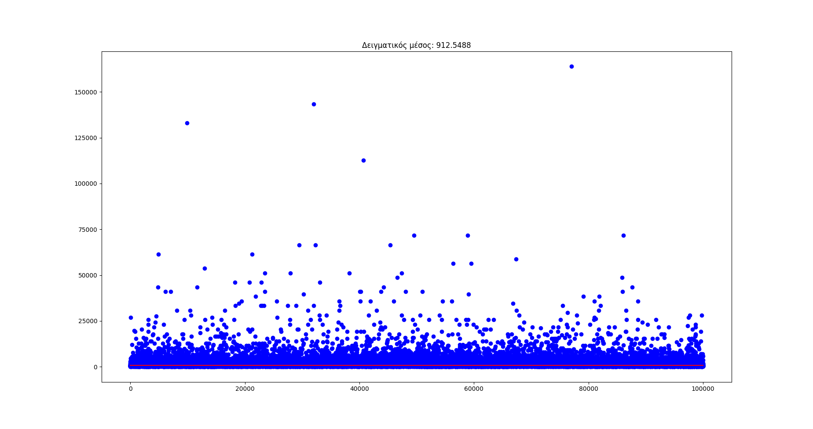
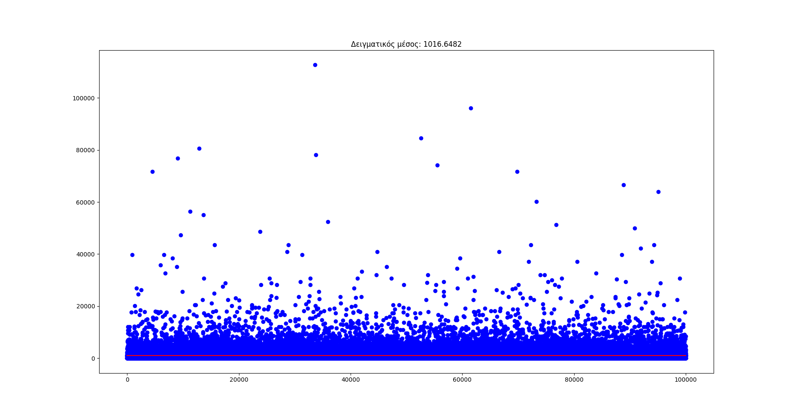
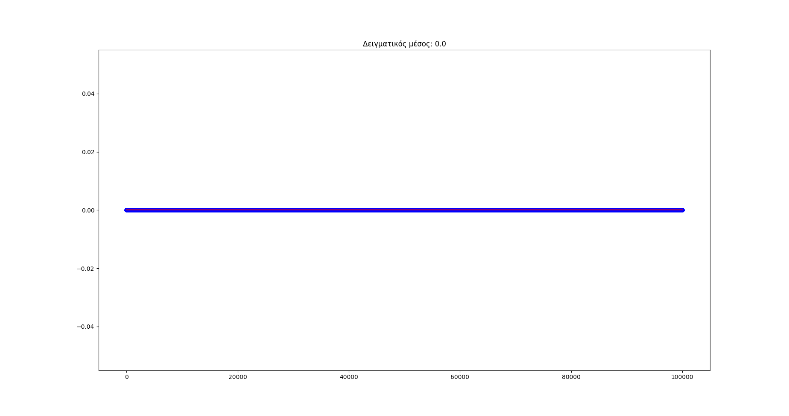
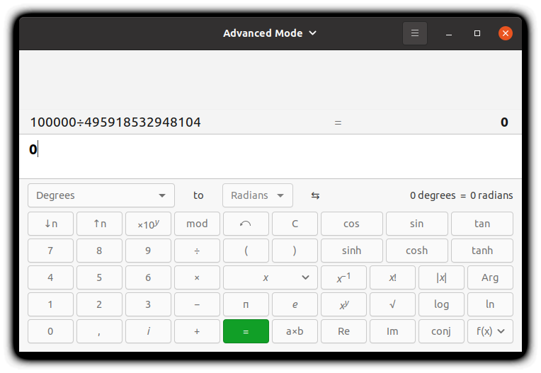

Η στρατηγική δε μετράει πάντα…#

Ο πίνακας Cardshaprs (αυτοί που κλέβουν στα χαρτιά) του Valentin de Boulogne.#
Η αλήθεια είναι ότι όταν έρχεται η ώρα για μία μεγάλη απόφαση στη ζωή μας, βάζουμε τα πάντα στο τραπέζι - τουλάχιστον όσα μπορούμε να γνωρίζουμε - και ζυγίζουμε ό,τι είναι να ζυγίσουμε πριν πάρουμε τις αποφάσεις μας. Ωστόσο, είναι αυτό κάτι που έχει πάντοτε νόημα; Χρειάζεται, δηλαδή, να καλοσχεδιάζουμε πάντοτε τις κινήσεις μας πριν τις κάνουμε;
Ένα ενδιαφέρον παιχνίδι#
Στη στήλη Insights του περιοδικού quanta τον προηγούμενο μήνα δημοσιεύτηκε, μεταξύ άλλων, ένα ενδιαφέρον πρόβλημα που σχετίζεται άμεσα με τα παραπάνω. Παρουσιάζουμε αμέσως το πρόβλημα, ελαφρώς παραλλαγμένο:
Σε ένα ιδιόμορφο καζίνο που δε θυμίζει σε τίποτα τα συμβατικά καζίνο, σε ένα τραπέζι κάποιοι παίκτες παίζουν ένα παιχνίδι με χαρτιά. Σε αυτό το παιχνίδι, κάθε παίκτης δίνει κάποια λεφτά για να συμμετέχει - δε μας απασχολεί αυτό προς το παρόν - και του δίνονται στην αρχή 100 ευρώ από αυτά για παίξει.
Σε κάθε γύρο ο γκρουπιέρης του τραπεζιού τραβάει ένα φύλλο από μία τράπουλα με 52 φύλλα.
Κάθε παίκτης ποντάρει ένα ποσό από αυτά που έχει στη διάθεσή του - ενδεχομένως και όλα όσα έχει στη διάθεσή του - ως προς το αν το φύλλο που τραβήχτε είναι μαύρο ή κόκκινο.
Ο γκρουπιέρης αποκαλύπτει το φύλλο που έχει τραβήξει.
Αν ο παίκτης έχει μαντέψει σωστά τότε κερδίζει ποσό ίσο με το ποντάρισμά του ενώ αν έχει μαντέψει λάθος τότε χάνει το ποντάρισμά του.
Το παιχνίδι επαναλαμβάνεται είτε μέχρι να πτωχεύσει ο παίκτης είτε μέχρι να τελειώσει η τράπουλα.
Για παράδειγμα, ας πούμε ότι στον πρώτο γύρο ποντάρουμε 40 ευρώ να έρθει κόκκινο. Αν το πρώτο φύλλο είναι μαύρο τότε θα χάσουμε αυτά τα 40 ευρώ μας και θα μείνουμε με 60. Αν, αντιθέτως, έρθει όντως κόκκινο, τότε θα κερδίσουμε άλλα 40 ευρώ και θα έχουμε στη διάθεσή μας 140 ευρώ.
Το ζητούμενο είναι στο παραπάνω παιχνίδι να βρούμε εκείνη τη στρατηγική παιξίματος που θα μεγιστοποιήσει τα αναμενόμενα κέρδη μας - με άλλα λόγια, τα μέσα κέρδη μας. Υποθέτουμε γενικά ότι ως παίκτες του παραπάνω παιχνιδιού είμαστε λογικές οντότητες και ότι κάθε στιγμή έχουμε πλήρη γνώση και μνήμη για το τι έχει εμφανιστεί στους προηγούμενους γύρους - με άλλα λόγια, θυμόμαστε ποια χαρτιά έχουν περάσει και, άρα, τι μένει μέσα στην τράπουλα.
Πριν προχωρήσουμε παρακάτω να παρατηρήσουμε ότι αυτό που μας απασχολεί εδώ είναι να μεγιστοποιήσουμε τη μέση τιμή του κέρδους μας και όχι το μέγιστο κέρδος μας. Δηλαδή, δε μας νοιάζει μία στρατηγική που σε κάποιο ενδεχόμενο θα μας αποφέρει πολλά αλλά μία στρατηγική που μακροπρόθεσμα θα μας δώσει τα περισσότερα κέρδη. Δηλαδή, μας νοιάζει πρωτίστως αν παίξουμε πολλές φορές το παιχνίδι να έχουμε, τελικά, το μεγαλύτερο δυνατό κέρδος.
Πίσω στο παιχνίδι μας τώρα. Η αλήθεια είναι ότι με μία πρώτη ματιά μπορεί κανείς να σκεφτεί πολλές στρατηγικές που φαίνονται εύλογες. Για παράδειγμα, μπορεί κανείς να ποντάρει συνεχώς ένα σταθερό ποσό ό,τι κι αν συμβεί. Για παράδειγμα, ας υποθέσουμε ότι ποντάρουμε σε κάθε γύρο από 5 ευρώ. Αυτό σημαίνει ότι θα καταφέρουμε να παίξουμε τουλάχιστον 20 γύρους μέχρι να χάσουμε όλη μας την περιουσία, καθώς σε κάθε γύρο, στη χειρότερη περίπτωση, μαντεύουμε λάθος, με αποτέλεσμα να χάνουμε 5 ευρώ. Μία ακόμα πιο επιφυλακτική στρατηγική θα ήταν να παίζουμε σε κάθε γύρω από \(\dfrac{100}{52}\approx1.92\) ευρώ έτσι ώστε να μην χρεοκοπήσουμε πριν τελειώσει η τράπουλα και, ταυτόχρονα, να μεγιστοποιήσουμε με «συντηρητικό» τρόπο τα κέρδη μας σε περίπτωση που μαντέψουμε σωστά.
Ωστόσο, οι παραπάνω στρατηγικές έχουν ένα βασικό πρόβλημα: δεν είναι λογικές. Πράγματι, ένας λογικός παίκτης θα έπαιζε με στόχο να μεγιστοποιήσει τα κέρδη του. Έτσι, αν για παράδειγμα, σε κάποιο σημείο, ας πούμε με 10 χαρτιά ακόμα να απομένουν στην τράπουλα, γνωρίζουμε ότι και τα 10 αυτά χαρτιά είναι όλα μαύρα, τότε θα ποντάρουμε σε κάθε γύρο όλη μας την «περιουσία» στο μαύρο, καθώς έτσι θα καταφέρνουμε σε κάθε γύρο να διπλασιάζουμε τα κέρδη μας. Συνεπώς, λόγω της υπόθεσής μας περί λογικής των παικτών πρέπει κάθε στιγμή να είμαστε έτοιμοι να εγκαταλείψουν την στρατηγική μας και, αν δούμε ότι πλέον εναπομένει μόνο ένα χρώμα στην τράπουλα, να ποντάρουμε σε κάθε γύρο που μένει όλα μας τα χρήματα σε αυτό. Επίσης, η λογική των παικτών που έχουμε υποθέσει επιτάσσει ότι σε κάθε γύρο που τα χαρτιά δεν είναι μοιρασμένα ποντάρουμε υπέρ του χρώματος με τα περισσότερα χαρτιά στην τράπουλα αφού το αντίθετο δε μας εξασφαλίζει πλεονέκτημα - αντιθέτως, «τελικά» χάνουμε.
Μία μικρή απλοποίηση#
Ακόμα και με αυτήν την υπόθεση περί της λογικής των παικτών, η ανάλυσή μας δε γίνεται ιδιαίτερα εύκολη, καθώς όπως φαντάζεται κανείς, οι στρατηγικές που μπορούμε να επιλέξουμε είναι πάρα πολλές. Επομένως, τι μπορούμε να κάνουμε, για να αποκτήσουμε μία καλύτερη διαίσθηση του παραπάνω προβλήματος; Σαφώς, να μελετήσουμε πρώτα μία απλούστερη εκδοχή του.
Ας υποθέσουμε, λοιπόν, για αρχή, ότι η τράπουλά μας έχει μόνο δύο χαρτιά, ένα μαύρο κι ένα κόκκινο. Τότε, είναι σαφές ότι αν αποφασίσουμε να ποντάρουμε \(p\) ευρώ σε ένα από τα δύο χρώματα, τα μέσα κέρδη μας θα είναι:
Αυτό ήταν λίγο έως πολύ αναμενόμενο. Με όποιον τρόπο κι αν αποφασίσουμε να παίξουμε στην αρχή, η πιθανότητα να κερδίσουμε είναι ίση με την πιθανότητα να χάσουμε, δεδομένου ότι έχουμε από ένα φύλλο από κάθε χρώμα στην μικρή τράπουλά μας, συνεπώς τα δύο ενδεχόμενα είναι ισοπίθανα.
Παρατηρήστε ωστόσο πώς αυτή η πολύ απλή περίπτωση μας δίνει και κάτι που ισχύει γενικότερα. Κάθε στιγμή που τα φύλλα που απομένουν στην τράπουλα είναι μοιρασμένα σε κόκκινα και μαύρα - για παράδειγμα, 23 κόκκινα και 23 μαύρα - τότε η αμέσως επόμενη μαντεψιά μας δεν επηρεάζει ουσιαστικά τα προσδοκώμενα κέρδη μας διότι ρισκάρουμε να χάσουμε ή να κερδίσουμε το ποσό που ποντάρουμε με ακριβώς την ίδια πιθανότητα.
Εντούτοις, ίσως το παραπάνω μοντέλο με τα δύο μόλις χαρτιά να μην είναι ιδιαίτερα χρήσιμο για περαιτέρω ανάλυση. Γι” αυτό, ας περάσουμε σε ένα λίγο πιο περίπλοκο μοντέλο το οποίο περιλαμβάνει μία τράπουλα με τέσσερα χαρτιά, δύο από κάθε χρώμα. Ας υποθέσουμε επίσης ότι θέλουμε να αξιολογήσουμε για αρχή την απλή στρατηγική κατά την οποία ποντάρουμε 5 ευρώ στο μαύρο σε κάθε γύρο αν τα φύλλα είναι μοιρασμένα και 10 ευρώ υπέρ του χρώματος με τα περισσότερα φύλλα στην τράπουλα σε άλλη περίπτωση. Ας δούμε ένα παράδειγμα, ενδεικτικά:
Στον πρώτο γύρο, αφού τα φύλλα είναι μοιρασμένα, ποντάρουμε 5 ευρώ στο μαύρο όπως υπαγορεύει η στρατηγική μας - άλλωστε, δεν έχει ιδιαίτερη σημασία. Ας υποθέσουμε ότι ότι το πρώτο φύλλο που βγαίνει είναι κόκκινο, οπότε χάνουμε τα 5 ευρώ μας και μένουμε με 95.
Στον επόμενο γύρο ποντάρουμε 10 ευρώ στο μαύρο, αφού η τράπουλά μας έχει 2 μαύρα κι ένα κόκκινο φύλλο. Ας υποθέσουμε ότι αυτήν τη φορά η τύχη μας χαμογελά και έρχεται πράγματι μαύρο, οπότε κερδίζουμε 10 ευρώ κι έχουμε στην άκρη πλέον 105 ευρώ.
Στον τρίτο γύρο τα φύλλα είναι ξανά μοιρασμένα, οπότε ποντάρουμε 5 ευρώ στο μαύρο. Ας υποθέσουμε ότι είμαστε και πάλι τυχεροί κι ότι έρχεται μαύρο φύλλο, οπότε κερδίζουμε άλλα 5 ευρώ κι έχουμε, τελικά, 110 ευρώ στην άκρη.
Στον τέταρτο γύρο ξέρουμε ότι έχει μείνει ένα κόκκινο φύλλο, οπότε ποντάρουμε όλη μας την περιουσία (110 ευρώ) στο κόκκινο και κερδίζουμε 110 ευρώ, οπότε τελικά βγαίνουμε από το παιχνίδι με 220 ευρώ.
Το παραπάνω ήταν μία αρκετά καλή παρτίδα, δεδομένου ότι κερδίσαμε, τελικά, 120 ευρώ σε σχέση με τα αρχικά 100 που είχαμε. Ωστόσο, θα μπορούσαμε αν κάναμε μία παραπάνω ήττα (!) να είχαμε κερδίσει περισσότερα. Πράγματι, ας δούμε αυτήν την εξέλιξη:
Στον πρώτο γύρο, αφού τα φύλλα είναι μοιρασμένα, ποντάρουμε 5 ευρώ στο μαύρο όπως υπαγορεύει η στρατηγική μας - άλλωστε, δεν έχει ιδιαίτερη σημασία. Ας υποθέσουμε ότι ότι το πρώτο φύλλο που βγαίνει είναι κόκκινο, οπότε χάνουμε τα 5 ευρώ μας και μένουμε με 95.
Στον επόμενο γύρο ποντάρουμε 10 ευρώ στο μαύρο, αφού η τράπουλά μας έχει 2 μαύρα κι ένα κόκκινο φύλλο. Ας υποθέσουμε ότι ούτε αυτήν τη φορά η τύχη μας χαμογελά και έρχεται κόκκινο, οπότε χάνουμε ευρώ κι έχουμε στην άκρη πλέον 85 ευρώ.
Στον τρίτο γύρο τα φύλλα που απομένουν είναι όλα μαύρα, οπότε ποντάρουμε και τα 85 ευρώ μας στο μαύρο, άρα κερδίζουμε 85 ευρώ κι έχουμε πλέον στην άκρη 170 ευρώ.
Στον τέταρτο γύρο ομοίως με τον τρίτο έχουμε πλέον ένα μαύρο φύλλο μέσα στην τράπουλα, οπότε ποντάρουμε και τα 170 ευρώ μας και κερδίζουμε άλλα 170 ευρώ, μένοντας τελικά με 340 ευρώ.
Στην παραπάνω σειρά χαρτιών βλέπουμε πώς, αν και χάσαμε δύο φορές μαντεύοντας λάθος, τελικά κερδίσαμε αρκετά περισσότερα ευρώ - 240, ενώ πριν μόλις 120.
Το παραπάνω ίσως να μας δίνει και μία ιδέα για μία παράδοξη αλλά ενδεχομένως πιο αποδοτική στρατηγική από την παραπάνω. Πριν όμως την περιγράψουμε, ας εξετάσουμε τα μέσα κέρδη που έχουμε από την παραπάνω στρατηγική. Για να το κάνουμε αυτό πρέπει να υπολογίσουμε και τα άλλα πιθανά μοιράσματα των τεσσάρων χαρτιών, πέρα από τους συνδυασμούς ΚΚΜΜ και ΚΜΜΚ - όπου το Κ σημαίνει κόκκινο και το Μ σημαίνει μαύρο. Συνολικά, τα δυνατά μοιράσματα που μπορούν να έρθουν είναι τα εξής:
ΚΚΜΜ
ΚΜΚΜ
ΚΜΜΚ
ΜΚΚΜ
ΜΚΜΚ
ΜΜΚΚ
Στον παρακάτω πίνακα έχουμε συνοψίσει όλα πονταρίσματα και την «περιουσία» μας σε κάθε γύρο, αφού αυτός έχει ολοκληρωθεί - άρα η στήλη με το 4ο χαρτί μας δείχνει και το τελικό ποσό μετά το πέρας του παιχνιδιού:
<figure class=»wp-block-table aligncenter is-style-stripes»>
Συνδυασμοί |
1ο χαρτί |
2ο χαρτί |
3ο χαρτί |
4ο χαρτί |
|---|---|---|---|---|
ΚΚΜΜ |
95€ |
85€ |
170€ |
340€ |
ΚΜΚΜ |
95€ |
105€ |
100€ |
200€ |
ΚΜΜΚ |
95€ |
105€ |
110€ |
220€ |
ΜΚΚΜ |
105€ |
115€ |
110€ |
220€ |
ΜΚΜΚ |
105€ |
115€ |
120€ |
240€ |
ΜΜΚΚ |
105€ |
95€ |
190€ |
380€ |
<figcaption>
Σύνοψη των στρατηγικών μας και του κέρδους που αποφέρει καθεμιά τους.
</figcaption>
Εδώ τώρα να παρατηρήσουμε πως οποιαδήποτε από τις 6 διατάξεις φύλλων είναι ισοπίθανη και άρα τα μέσα κέρδη μας είναι ουσιαστικά ο αριθμητικός μέσος των αριθμών που βλέπουμε στην τελευταία στήλη του παραπάνω πίνακα. Αθροίζοντας βλέπουμε ότι όλα τα παραπάνω μας δίνουν 1600€, επομένως τα αναμενόμενα κέρδη μας - μέσα κέρδη - από αυτήν τη στρατηγική είναι 266.67€. Ωραία, η στρατηγική μας ήταν αρκετά μετριοπαθής για να περιμένουμε κάτι τεράστιο, οπότε μπορούμε να πούμε κι «ευχαριστώ» στο καζίνο που μας αφήνει να παίζουμε ένα τέτοιο παιχνίδι.
Ας μελετήσουμε τώρα μία εναλλακτική στρατηγική, κάπως πιο επιθετική. Παρατηρήστε ότι στον παραπάνω πίνακα, ένα από τα καλύτερα σενάρια είναι να χάσουμε πρώτα δύο φορές και στο τέλος να ποντάρουμε «φορσέ» όλη μας την περιουσία, γνωρίζοντας ότι έχει μείνει ένα χρώμα μέσα στην τράπουλα. Επομένως, ίσως είναι πιο χρήσιμο αντί να ποντάρουμε μόνο ένα δεκάρικο στην «ασφαλή» επιλογή που έχουμε δύο χαρτιά ίδιου χρώματος και ένα από το άλλο χρώμα, να ποντάρουμε πιο πολλά, ας πούμε 40€. Η νέα μας στρατηγική, επομένως, είναι η εξής:
αν τα φύλλα είναι μοιρασμένα στην τράπουλα τότε επιλέγουμε να ποντάρουμε 5€ στο μαύρο ενώ,
αν τα φύλλα στην τράπουλα δεν είναι μοιρασμένα τότε επιλέγουμε να ποντάρουμε 40€ στο φύλλο που έχει τις περισσότερες εμφανίσεις και, όπως πάντα,
αν έχουν μείνει φύλλα μόνο ενός χρώματος, τότε ποντάρουμε όλη μας την περιουσία σε αυτό το χρώμα.
Όπως και παραπάνω, μπορούμε να φτιάξουμε έναν ανάλογο πίνακα που να μας δείχνει πόσα ευρώ κερδίζουμε ή χάνουμε τελικά στα έξι πιθανά μοιράσματα:
<figure class=»wp-block-table aligncenter is-style-stripes»>
Συνδυασμοί |
1ο χαρτί |
2ο χαρτί |
3ο χαρτί |
4ο χαρτί |
|---|---|---|---|---|
ΚΚΜΜ |
95€ |
55€ |
110€ |
220€ |
ΚΜΚΜ |
95€ |
135€ |
130€ |
260€ |
ΚΜΜΚ |
95€ |
135€ |
140€ |
280€ |
ΜΚΚΜ |
105€ |
145€ |
140€ |
280€ |
ΜΚΜΚ |
105€ |
145€ |
150€ |
300€ |
ΜΜΚΚ |
105€ |
65€ |
130€ |
260€ |
<figcaption>
Σύνοψη της επιθετικής στρατηγικής μας.
</figcaption>
Αν προσθέσουμε όλα τα παραπάνω θα βρούμε 1600€, συνεπώς και πάλι τα μέσα κέρδη μας από αυτήν τη στρατηγική θα είναι 266.67€. Δηλαδή, παρότι θέσαμε την περιουσία μας σε μεγαλύτερο κίνδυνο, τελικά κατά μέσο όρο θα βγάλουμε τα ίδια.
Βασικά, αν συγκρίνουμε τους δύο παραπάνω πίνακες, μπορούμε να παρατηρήσουμε ότι η δεύτερη στρατηγική μας, καίτοι φαίνεται αρκετά πιο παράτολμη, μας δίνει λιγότερο διασπαρμένα αποτελέσματα. Πράγματι, για να μετρήσουμε πόσο διασπαρμένα είναι τα αποτελέσματά μας θα χρησιμοποιήσουμε το μέτρο της διασποράς. Πρακτικά, η διασπορά αντιστοιχεί στον μέσο όρο των (τετραγώνων) των αποστάσεων των παρατηρήσεων του δείγματός μας από τη μέση τιμή. Δηλαδή, αν έχουμε παρατηρήσεις \(t_1,t_2,\ldots,t_n\) με μέση τιμή \(\mu\) τότε η διασπορά, \(\sigma^2,\) δίνεται από τη σχέση:
Πριν υπολογίσουμε τις διασπορές των αποτελεσμάτων που έχουμε παραπάνω, να πούμε εδώ ότι ορίζουμε δύο λογιών διασπορές: μία που αναφέρεται σε έναν ολόκληρο πληθυσμό - και δίνεται από την παραπάνω σχέση - και μία που αναφέρεται σε ένα δείγμα (δειγματική διασπορά) και δίνεται από την παρακάτω σχέση:
Η διαφορά είναι πρακτικά στον συντελεστή με τον οποίο πολλαπλασιάζουμε το άθροισμα όλων των τετραγωνικών αποστάσεων και οφείλεται στο ότι όταν έχουμε στη διάθεσή μας μόνο ένα δείγμα από έναν πληθυσμό τότε η σταθερά \(\frac{1}{n-1}\) αντί της \(\frac{1}{n}\) εξασφαλίζει πιο ενδιαφέρουσες και θεμιτές ιδιότητες για τη διασπορά. Εμείς εδώ θα χρησιμοποιήσουμε την πρώτη επιλογή, διότι πρακτικά έχουμε όλον τον πληθυσμό στη διάθεσή μας. Βέβαια, εδώ που τα λέμε, δεδομένου ότι μας ενδιαφέρει μοναχά το ποιο από τα δύο δείγματα τελικών πληρωμών είναι πιο «απλωμένο», όποια από τις δύο εκδοχές και να επιλέγαμε, τα ίδια ποιοτικά συμπεράσματα θα βγάζαμε.
Πολυλογούμε, ωστόσο και δεν παίρνουμε αποτελέσματα. Χρησιμοποιώντας τον πρώτο τύπο και έναν online υπολογιστή διασπορών - όχι, που θα καθόμαστε να υπολογίζουμε με το χέρι - όπως αυτόν εδώ, βρίσκουμε:
Αισθητά πιο μεγάλη η διασπορά που παίρνουμε από την πρώτη στρατηγική μας που φαίνεται ιδιαίτερα συντηρητική, ενώ η παράτολμη στρατηγική μας να ποντάρουμε 40€ όποτε μας ευνοούν οι συγκυρίες έχει πιο μικρή διασπορά. Βασικά, για να λέμε και τα πράγματα με το όνομά τους, δεδομένου ότι στους παραπάνω υπολογισμούς όλα είναι υψωμένα στο τετράγωνο, οι μονάδες των \(\sigma_1^2,\sigma_2^2\) είναι «τετραγωνικά ευρώ». Ωστόσο, επειδή μάλλον δεν είναι εύκολο να συγκρίνει κανείς ποσότητες που μετριούνται με μονάδες που είναι τόσο μακρινές από την καθημερινή διαίσθηση - αν χρησιμοποιείτε τετραγωνικά ευρώ καθημερινά, γράψτε το στα σχόλια, θα είχε ενδιαφέρον. Συνεπώς, είθισται σε τέτοια μεγέθη να παίρνουμε μετά και μία τετραγωνική ρίζα, έτσι ώστε να διορθώνουμε αυτά τα παράδοξα των μονάδων μέτρησης και να κάνουμε πιο εύκολη τη σύγκριση με τις παρατηρήσεις μας.
Έχουμε, λοιπόν:
Συνεπώς, ενώ στην πρώτη περίπτωση - την κατ” ευφημισμό συντηρητική - έχουμε μία μέση απόκλιση από τη μέση τιμή της τάξης περίπου των 68€, στη δεύτερη περίπτωση - την κατ” ευφημισμό επιθετική - έχουμε μία αισθητά μικρότερη απόκλιση, της τάξεως των περίπου 25€.
Όπως και να έχει, και οι δύο στρατηγικές, διαφορετικές εν γένει μεταξύ τους, δίνουν τα ίδια αναμενόμενα κέρδη: 266.67€. Ας δούμε τώρα και μία αφελή στρατηγική - αμιγώς τζογαδόρικη. Η τρίτη στρατηγική που θα παρουσιάσουμε θα είναι σε κάθε περίπτωση που δεν έχει απομείνει μόνο ένα χρώμα στην τράπουλα, να ποντάρουμε υπέρ του χρώματος που ευνοείται όλη μας την περιουσία είτε, όταν τα χαρτιά είναι μοιρασμένα, όλα υπέρ του κόκκινου - θα μπορούσαμε και στο μαύρο, απλά το ευνοήσαμε πολύ στις προηγούμενες δύο στρατηγικές. Έτσι, έχουμε τον ακόλουθο πίνακα πληρωμών:
<figure class=»wp-block-table aligncenter is-style-stripes»>
Συνδυασμοί |
1ο χαρτί |
2ο χαρτί |
3ο χαρτί |
4ο χαρτί |
|---|---|---|---|---|
ΚΚΜΜ |
200€ |
0€ |
0€ |
0€ |
ΚΜΚΜ |
200€ |
400€ |
800€ |
1600€ |
ΚΜΜΚ |
200€ |
0€ |
0€ |
0€ |
ΜΚΚΜ |
0€ |
0€ |
0€ |
0€ |
ΜΚΜΚ |
0€ |
0€ |
0€ |
0€ |
ΜΜΚΚ |
0€ |
0€ |
0€ |
0€ |
<figcaption>
Σύνοψη της τζογαδόρικης στρατηγικής.
</figcaption>
Κι εδώ εύκολα βλέπουμε ότι τα μέσα κέρδη μας είναι 266.67€ αν και, σαφώς, υπάρχει μία τεράστια διασπορά - «με το μάτι» αυτό φαίνεται - αφού κερδίζουμε σε ένα μόνο σενάριο - αλλά πολλά, είναι η αλήθεια. Για να ακριβολογούμε, έχουμε:
Το εντυπωσιακό, ως τώρα, είναι ότι όσες στρατηγικές κι αν έχουμε δοκιμάσει, τελικά όλες δίνουν τα ίδια αναμενόμενα κέρδη. Δηλαδή, αν παίξουμε αρκετές φορές το εν λόγω παιχνίδι με την ίδια στρατηγική αναμένουμε να βγάζουμε κατά μέσο όρο 266.67€.
Η παραπάνω «οριακή» αντίληψη της μέση τιμής υποκρύπτει τουςνόμους των μεγάλων αριθμών- που δεν ισχύουν πάντοτε - αλλά στην προκειμένη είναι αρκετά ασφαλές να υποθέσουμε ότι πράγματι τα παραπάνω είναι καλώς τοποθετημένα.
Επιστροφή στο πλήρες πρόβλημα#
Είδαμε δύο αρκετά απλές περιπτώσεις του παραπάνω προβλήματος, μία όπου είχαμε μόνο δύο χαρτιά - από την οποία δεν πήραμε και πολλές πληροφορίες - και μία που είχαμε τέσσερα χαρτιά. Η τελευταία μας έδωσε κάτι απροσδόκητα ενδιαφέρον: ότι, τουλάχιστον για τις τρεις στρατηγικές που είδαμε, δεν έχει σημασία πώς παίζουμε, αφού στο τέλος κερδίζουμε κατά μέσο όρο τα ίδια. Ωστόσο, σαφώς η εμπειρική ανάλυσή μας δεν μπορεί να περιοριστεί εδώ καθώς μπορούμε να βρούμε τουλάχιστον δύο σενάρια στα οποία μπορεί τα παραπάνω να μην ισχύουν:
να υπάρχει μία στρατηγική στην απλοποίηση του παιχνιδιού με τα τέσσερα φύλλα που να μας δίνει μεγαλύτερα ή μικρότερα μέσα κέρδη ή,
να ήταν υπερβολικά απλή η προσέγγισή μας με τα τέσσερα φύλλα και να μη γενικεύονται οι παραπάνω παρατηρήσεις καλώς σε τράπουλες με περισσότερα φύλλα.
Επομένως, θα ήταν χρήσιμο να δοκιμάσουμε τα παραπάνω σε τράπουλες με περισσότερα χαρτιά, για αρχή, έτσι ώστε να απορρίψουμε το δεύτερο σενάριο - για το πρώτο θα δούμε τι θα κάνουμε στην πορεία. Ωστόσο, ήδη με τέσσερα χαρτιά είχαμε έξι ισοπίθανους συνδυασμούς χαρτιών να εξετάσουμε. Αν, για παράδειγμα, έχουμε μία τράπουλα με 6 χαρτιά, αναμένουμε να έχουμε ακόμα περισσότερους. Για την ακρίβεια, για να μετρήσουμε τους πιθανούς συνδυασμούς θα χρειαστούμε τον διωνυμικό συντελεστή:
Ο διωνυμικός συντελεστής μετρά πρακτικά με πόσους τρόπους μπορούμε να διαλέξουμε από ένα σύνολο \(n\) στοιχείων \(k\) από αυτά χωρίς να μας απασχολεί η σειρά με την οποία τα επιλέγουμε. Τώρα, ας περάσουμε στο σενάριο που μας απασχολεί, το οποίο είναι να έχουμε μία τράπουλα με 6 χαρτιά, 3 κόκκινα και 3 μαύρα. Εδώ, πρακτικά, το να απαριθμήσουμε όλες τις ακολουθίες που μπορούν να εμφανιστούν συνίσταται στο να απαριθμήσουμε τους τρόπους με τους οποίους μπορούμε να αναδιατάξουμε αυτά τα 3+3 χαρτιά που έχουμε αδιαφορώντας για ο,τιδήποτε άλλο πέρα από το χρώμα τους. Αυτό μπορούμε να το κάνουμε επιλέγοντας 3 από τις 6 θέσεις που έχουμε διαθέσιμες ως εκείνες στις οποίες θα εμφανιστούν τα μαύρα χαρτιά κι έπειτα αδιαφορώντας για τα κόκκινα χαρτιά - θα πάνε «φορσέ» στις 3 θέσεις που έχουμε αφήσει κενές. Επομένως, αρκεί να μετρήσουμε τους τρόπους με τους οποίους από τις 6 ελεύθερες θέσεις θα δεσμεύσουμε 3 για τα μαύρα χαρτιά, κάτι που γίνεται με:
\(\binom{6}{3}=\frac{6!}{3!3!}=20\) τρόπους.
Σαφώς, 20 ακολουθίες είναι πολλή δουλειά. Ενδεικτικά, αν θέλαμε να μελετήσουμε την αρχική εκδοχή του παιχνιδιού, με τα 52 φύλλα, θα χρειαζόμαστε:
\(\binom{52}{26}=\frac{52!}{26!26!}=495\ 918\ 532\ 948\ 104\) ακολουθίες.
Ε, σαφώς δεν πρόκειται να επαναλάβουμε την παραπάνω ανάλυση για περίπου 500 τρισεκατομμύρια ακολουθίες - για να έχουμε ένα μέτρο σύγκρισης, πριν από περίπου 40.3 τρισεκατομμύρια λεπτά γεννήθηκε η Γη. Εδώ θα μας βοηθήσει η τεχνολογία, έτσι ώστε να αποκτήσουμε έστω μία διαίσθηση του φαινομένου. Χρησιμοποιώντας την πολυαγαπημένη python θα γράψουμε αρχικά ένα script που να προσομοιώνει έναν γύρο του παιχνιδιού. Ο αντίστοιχος κώδικας φαίνεται παρακάτω:
import random
def single_round(red, black, pot, strategy):
black_ratio = black/(red + black)
new_card = 0 # 0 stands for red
if random.random() < black_ratio:
new_card = 1
(bet_card, bet_amount) = strategy(red, black, pot)
if bet_card == new_card:
return (new_card, bet_amount)
return (new_card, -bet_amount)
Να εξηγήσουμε λίγο τι έχουμε γράψει παραπάνω, για να είναι σαφές πώς θα επεκτείνουμε στην πορεία τον παραπάνω κώδικα. Αρχικά, φορτώνουμε τη βιβλιοθήκη random της python για να μπορούμε να παράγουμε ψευδοτυχαίους αριθμούς - θα μπορούσαμε να χρησιμοποιήσουμε και τη δική μας γεννήτρια ψευδοτυχαίων αριθμών, αλλά απλά θα γράφαμε περισσότερο κώδικα. Έπειτα, ορίζουμε μία συνάρτηση με τέσσερα ορίσματα:
τα red και black που αντιπορσωπεύουν το πλήθος κόκκινων και μαύρων χαρτιών που μένουν στην τράπουλα,
το pot που είναι το ποσό που έχουμε στη διάθεσή μας εκείνη τη στιγμή και,
τη strategy, που είναι συνάρτηση και, όπως θα δούμε παρακάτω, θα εκφράζει την εκάστοτε στρατηγική μας - στη συνέχεια θα δούμε ακριβώς τα ορίσματά της.
Έπειτα, για να προσομοιώσουμε το τράβηγμα ενός φύλλου από την τράπουλά μας, υπολογίζουμε την αναλογία \(p\) των μαύρων φύλλων προς όλα τα φύλλα μέσα στην τράπουλα κι επιλέγουμε έναν ψευδοτυχαίο αριθμό στο \((0,1).\) Αν αυτός είναι μικρότερος από \(p\) τότε θεωρούμε ότι τραβήξαμε μαύρο φύλλο - που το αναπαριστούμε με 1 - ειδάλλως θεωρούμε ότι τραβήξαμε κόκκινο - που το αναπαριστούμε με 0. Στη συνέχεια, καλώντας την συνάρτηση strategy με ορίσματα το πλήθος των κόκκινων και μαύρων φύλλων και την περιουσία μας εκείνη τη στιγμή παίρνουμε το χαρτί που αναμένουμε να τραβήξουμε (κόκκινο ή μαύρο) και το ποσό που ποντάρουμε σε αυτό. Τέλος, αν το χαρτί που μαντέψαμε είναι πράγματι αυτό που βγήκε τότε επιστρέφουμε το νέο χαρτί που τραβήχτηκε από την τράπουλα μαζί με το ποσό που κερδίζουμε, ειδάλλως επιστρέφουμε το χαρτί που τραβήχτηκε από την τράπουλα με το ποσό που χάσαμε.
Τώρα, χρησιμοποιώντας την παραπάνω συνάρτηση, ορίζουμε τη συνάρτηση game που παίζει ένα παιχνίδι με μία τράπουλα με 2n χαρτιά - n κόκκινα και n μαύρα - όπως φαίνεται παρακάτω:
def game(n, strategy):
red = n
black = n
pot = 100
while red > 0 and black > 0 and pot > 0:
(new_card, profit) = single_round(red, black, pot, strategy)
pot += profit
if new_card == 1:
black -= 1
else:
red -= 1
pot = max(0,pot*2**(red+black))
return pot
Εδώ τα περισσότερα είναι σαφή. Αρχικά, αρχικοποιούμε τις μεταβλητές μας και στη συνέχεια τραβάμε χαρτιά μέχρι είτε να χρεοκοπήσουμε είτε να ξεμείνουμε από ένα από τα δύο χρώματα. Στο τέλος, επιστρέφουμε όσα μας έμειναν επί \(2^{r+b}\) όπου \(r,b\) είναι το πλήθος των κόκκινων και μαύρων χαρτιών στην τράπουλα αντίστοιχα. Σαφώς, είτε όσα θα έχουμε στο τέλος θα είναι μηδέν (ή αρνητικός αριθμός αν δεν έχουμε ορίσει καλά τη στρατηγική μας) είτε ένα ακριβώς εκ των $Latex r,b$ θα είναι μηδέν, οπότε με αυτόν τον τρόπο επιτυγχάνουμε συνοπτικά τον τελικό διπλασιασμό του κεφαλαίου μας σε κάθε γύρο του παιχνιδιού που γνωρίζουμε ότι μόνο ένα χρώμα έχει μείνει στην τράπουλα.
Τώρα, μένει να ορίσουμε και κάποια στρατηγική. Θα ξεκινήσουμε αρχικά με την κατ” ευφημισμόν συντηρητική στρατηγική μας, η οποία μπορεί να οριστεί εύκολα όπως φαίνεται παρακάτω:
def conservative(red, black, pot):
if red > black:
return (0, 10)
elif red < black:
return (1, 10)
return (1, 5)
Εδώ δεν κάναμε τίποτα άλλο από το να εκφράσουμε τη στρατηγική μας μέσα από ένα απλό if, σχεδόν όπως και με τα λόγια παραπάνω. Τώρα, για να πάρουμε μία εκτίμηση των μέσων κερδών μας, μπορούμε να παίξουμε πολλά παιχνίδια σαν το παραπάνω και να πάρουμε τον (δειγματικό) μέσο τους. Για να πετύχουμε κάτι τέτοιο θα χρειαστούμε την ακόλουθη συνάρτηση main :
import matplotlib.pyplot as plt
if __name__ == '__main__':
games = 10000
n = 20
results = []
mean = 0
for i in range(games):
result = game(n, conservative)
results.append(result)
mean += result
mean /= games
plt.plot(results, 'bo')
plt.plot([0,games], [mean, mean], 'r-')
plt.title('Δειγματικός μέσος: ' + str(mean))
plt.show()
Παρατηρήστε ότι αποφασίσαμε να παίξουμε 10000 παιχνίδια με μία τράπουλα με 40 φύλλα. Αυτό το κάναμε για να δοκιμάσουμε πρώτα την υλοποίησή μας, καθώς το \(\binom{40}{20}\) είναι αρκετά μικρότερος αριθμός από το \(\binom{52}{26}\) αφού:
Δηλαδή μιλάμε μόλις για λίγα δισεκατομμύρια διαφορετικές επιλογές - είναι περίπου 2 χιλιάδες φορές λιγότερες από όσες είχαμε στην αρχή.
Με αυτό έχουμε ολοκληρώσει το script που θα χρησιμοποιήσουμε για αυτά τα πειράματα το οποίο, τελικά, έχει ως εξής:
import random
import matplotlib.pyplot as plt
def conservative(red, black, pot):
if red > black:
return (0, 10)
elif red < black:
return (1, 10)
return (1, 5)
def single_round(red, black, pot, strategy):
black_ratio = black/(red + black)
new_card = 0 # 0 stands for red
if random.random() < black_ratio:
new_card = 1
(bet_card, bet_amount) = strategy(red, black, pot)
if bet_card == new_card:
return (new_card, bet_amount)
return (new_card, -bet_amount)
def game(n, strategy):
red = n
black = n
pot = 100
while red > 0 and black > 0 and pot > 0:
(new_card, profit) = single_round(red, black, pot, strategy)
pot += profit
if new_card == 1:
black -= 1
else:
red -= 1
pot = max([0,pot*2**(red+black)])
return pot
if __name__ == '__main__':
games = 10000
n = 20
results = []
mean = 0
for i in range(games):
result = game(n, conservative)
results.append(result)
mean += result
mean /= games
plt.plot(results, 'bo')
plt.plot([0,games], [mean, mean], 'r-')
plt.title('Δειγματικός μέσος: ' + str(mean))
plt.show()
Εκτελώντας το παραπάνω script λογικά θα πάρουμε κάτι σαν κι αυτό εδώ:

Χμμμ, άβολη οπτικοποίηση…#
Η αλήθεια είναι ότι είναι λίγο άκομψο αυτό που συνέβη εδώ από μεριάς οπτικοποίησης γιατί όλες οι μπλε κουκκίδες βρίσκονται κάτω εκτός από μία που έχει ανέβει αρκετά ψηλά - κάποιος έβγαλε πολλά λεφτά, μάλλον - με αποτέλεσμα να μην κεντράρει καλά το σχήμα μας. Επίσης, αυτός ο συνωστισμός εκεί στα χαμηλά εισοδήματα δε μας βοηθά να έχουμε και μία καλύτερη εικόνα για το δείγμα μας. Γι” αυτόν τον σκοπό, θα αλλάξουμε τος άξονές μας και, για την ακρίβεια, θα μετρήσουμε, όπως λέμε, λογαριθμικά στον κατακόρυφο άξονα. Αυτό σημαίνει ότι αντί η απόσταση μεταξύ δύο ισαπέχουσων γραμμών να είναι σταθερή και ίση όπως παραπάνω με 2000 ευρώ, η απόσταση ανάμεσα στην πρώτη και τη δεύτερη γραμμή θα είναι για παράδειγμα 1, ανάμεσα στη δεύτερη και την τρίτη θα είναι 10, έπειτα 100, έπειτα 1000 κ.ο.κ. Δηλαδή, αντί να προσθέτουμε σταθερά την ίδια μονάδα, πολλαπλασιάζουμε με την ίδια μονάδα - εδώ με το 10, αλλά μικρή σημασία έχει. Αυτό μπορούμε να το πετύχουμε τροποποιώντας τη συνάρτηση main ως εξής:
if __name__ == '__main__':
games = 10000
n = 20
results = []
mean = 0
for i in range(games):
result = game(n, conservative)
results.append(result)
mean += result
mean /= games
plt.plot(results, 'bo')
plt.plot([0,games], [mean, mean], 'r-')
# plt.yscale('log')
plt.title('Δειγματικός μέσος: ' + str(mean))
plt.show()
Ξανατρέχοντας τα πειράματα έχουμε το εξής αποτέλεσμα:

Αρκετά καλύτερα!#
Εδώ φαίνεται πιο ξεκάθαρα τι συμβαίνει. Παρατηρήστε πώς από το ένα πείραμα στο άλλο ο μέσος όρος έχει διαφοροποιηθεί ελαφρώς, χωρίς ωστόσο αυτό να είναι σημαντικό καθώς και στις δύο περιπτώσεις είναι κάπου κοντά στο 800.
Ωραία, όλα δουλεύουν κανονικά, οπότε ευκαιρία να δοκιμάσουμε και με τα κανονικά μας νούμερα. Θα τρέξουμε το παραπάνω script με μία τράπουλα 52 φύλλων και θα κάνουμε 100000 αντί για 10000 πειράματα με τη συντηρητική στρατηγική μας. Τα αποτελέσματα φαίνονται στο ακόλουθο σχήμα:

Εντάξει, πάλι στριμώχτηκαν οι παρατηρήσεις αλλά δεν μπορούμε να κάνουμε κάτι καλύτερο τώρα.#
Τώρα θα υλοποιήσουμε και τη δεύτερη στρατηγική μας, μέσω της ακόλουθης συνάρτησης:
def aggressive(red, black, pot):
if red > black:
return (0, 40)
elif red < black:
return (1, 40)
return (1, 5)
Τώρα, τρέχοντας το παραπάνω script καλώντας την aggressive αντί της conservative παίρνουμε το εξής γράφημα:

Εδώ αρχίζει να έχει ενδιαφέρον…#
Εδώ έχουμε, μεν, μία μέση τιμή συγκρίσιμη με την προηγούμενη μέση τιμή, ωστόσο είναι και αρκετά μακριά για να αρχίσουμε να έχουμε αμφιβολίες. Όπως και να έχει, συνεχίζουμε και με την τρίτη στρατηγική μας και θα τα πούμε αναλυτικά σε λίγο όλα όσα προκύψουν. Γι” αυτήν έχουμε την ακόλουθη συνάρτηση που την υλοποιεί:
def more_aggressive(red, black, pot):
if red > black:
return (0, pot)
elif red < black:
return (1, pot)
return (1, pot)
Τώρα, με αυτήν έχουμε το ακόλουθο γράφημα:

Ωραίααα…#
Εδώ τώρα τα πράγματα περιπλέχτηκαν έτι περαιτέρω. Το τελευταίο γράφημα λέει ότι με την τελευταία άκρως επιθετική στρατηγική στην οποία ό,τι κι αν συμβεί εμείς ποντάρουμε όλη μας την περιουσία στο μαύρο δεν κερδίζουμε τίποτα. Ας πάρουμε μία βαθειά ανάσα κι ας ξανασκεφτούμε την παραπάνω στρατηγική. Πότε μπορούμε να κερδίσουμε με αυτήν τη στρατηγική; Μόνο σε μία περίπτωση: όταν έρχονται εναλλάξ κόκκιμα και μαύρα φύλλα. Σε κάθε άλλη περίπτωση που χάσουμε έστω και σε έναν γύρο χάνουμε αυτόματα όλη μας την περιουσία. Συνεπώς, για να ήταν το παραπάνω γράφημα κάτι παραπάνω από μία ευθεία γραμμή θα έπρεπε να είχαμε πετύχει αυτήν την μία στις περίπου 500 τρισεκατομμύρια περιπτώσεις να κερδίσουμε. Με 100000 δοκιμές που κάναμε είχαμε πιθανότητα περίπου μηδέν, όπως μάς πληροφορεί μία γνωστή μου αριθμομηχανή:

Ξεπεράσαμε και την αριθμητική ακρίβεια ενός υπολογιστή.#
Ωστόσο, δεδομένου ότι σε μόνο μία περίπτωση έχουμε θετικό κέρδος, είναι εύκολο να υπολογίσουμε τη μέση τιμή και χωρίς ηλεκτρονικό υπολογιστή. Πράγματι, στο σενάριο που κερδίζουμε έρχονται διαρκώς εναλλάξ κόκκινα και μαύρα φύλλα και σε κάθε γύρο διπλασιάζουμε την περιουσία μας. Συνολικά, λοιπόν, έχουμε 52 διπλασιασμούς των αρχικών 100 ευρώ μας, δηλαδή:
ή, σε απλά ελληνικά, περίπου 450 τετράκις εκατομμύρια. Για να καταλάβουμε για τι μέγεθος μιλάμε ας αναλογιστούμε για μία στιγμή ότι η ηλικία της Γης μετρημένη σε δευτερόλεπτα είναι ίση με περίπου 145 τετράκις εκατομμύρια δευτερόλεπτα.
Τώρα που αναλογιστήκαμε ότι με αρκετή τύχη μπορούμε να χρεώσουμε ένα καζίνο περισσότερο από όσο ρευστό έχει κυκλοφορήσει ποτέ στην αγορά από την εποχή του Κροίσου, ας συνεχίσουμε. Διαιρώντας το παραπάνω με το πλήθος των συνδυασμών που έχουμε στη διάθεσή μας και κάνοντας μία στρογγυλοποίηση στα 2 δεκαδικά ψηφία - μέχρι τα λεπτά του ευρώ, δηλαδή - έχουμε μία μέση τιμή της τάξης των 908.13 ευρώ, που συμφωνεί εκπληκτικά με την πρώτη μας συντηρητική στρατηγική - ποιος το περίμενε ότι μετά από τόσες περιστροφές θα καταλήγαμε εκεί.
Συνεπώς, η κατά κάποιον τρόπο «προβληματική» στρατηγική φαίνεται να είναι η δεύτερη. Αρχικά, ας παρατηρήσουμε ότι οι παρατηρήσεις που είχαμε κάνει περί διασπορών φαίνεται να γενικεύονται ομαλά και στην κανονική τράπουλα των 52 φύλλων, καθώς οι τιμές που αντιστοιχούν στα κέρδη μας από τη δεύτερη στρατηγική φαίνονται κάπως πιο «συσπειρωμένες» σε σχέση με της πρώτης. Αλλά, σε ό,τι έχει να κάνει με τη μέση τιμή που μας απασχολεί, η αλήθεια είναι ότι δεν μπορούμε να καταλήξουμε σε συμπέρασμα. Από τη μία, θα μπορούσε η δεύτερη στρατηγική να είναι αυτή που διαφοροποιείται από τις άλλες δύο και έτσι να μη μας δίνουν όλες οι στρατηγικές τα ίδια αναμενόμενα κέρδη. Από την άλλη, θα μπορούσε η παραπάνω διαφοροποίηση να ερμηνεύεται και ως απλά μία αδυναμία ενός τόσο μικρού και τυχαία επιλεγμένου δείγματος να αποτυπώσει όλη την πολυπλοκότητα του προβλήματος. Σκεφτείτε ενδεικτικά ότι τα δείγματά μας περιέχουν \(10^5\) παρατηρήσεις ενώ ο συνολικός πληθυσμός μας είναι της τάξεως των εκατοντάδων τρισεκατομμυρίων, ήτοι \(10^{14}.\) Συνεπώς, ο πληθυσμός μας είναι περίπου ένα δισεκατομμύριο φορές μεγαλύτερος από το δείγμα μας, άρα είναι λογικό να μην μπορούμε να βγάλουμε και με ιδιαίτερη ασφάλεια πολλά συμπεράσματα. Για την ακρίβεια, θα ήταν σαν να προσπαθούσαμε να εκτιμήσουμε τη μέση ηλικία των ανθρώπων στον πλανήτη Γη - που είμαστε περίπου 7.5 δισεκατομμύρια - χρησιμοποιώντας τις ηλικίες 7 ανθρώπων.
Η ώρα του φορμαλισμού#
Μετά από τόσα διαγράμματα και δοκιμές και έχοντας φτάσει σε ένα αδιέξοδο, ήρθε η ώρα να υπεισέλθει στη συζήτησή μας ο μαθηματικός φορμαλισμός. Η αλήθεια είναι ότι η παραπάνω πορεία είναι ενδεικτική του πώς συνηθίζουμε να αντιμετωπίζουμε ένα σχετικά περίπλοκο πρόβλημα. Αρχικά μελετούμε κάποιες απλές περιπτώσεις του, έπειτα προσπαθούμε να γενικεύσουμε - ή, καλύτερα, να εξετάσουμε αν γενικεύονται - τα συμπεράσματά μας και σε πιο περίπλοκες περιπτώσεις και, στο τέλος, αφού έχουμε αποκτήσει καλή διαίσθηση για αυτό, αρχίζουμε να ασχολούμαστε με το γενικό πρόβλημα.
Στη συγκεκριμένη περίπτωση, βέβαια, η παραπάνω εμπειρική διερεύνηση μας έχει ελαφρώς μπερδέψει. Είναι ή δεν είναι ίδιες οι μέσες τιμές όλων των στρατηγικών - και, ειδικότερα, των τριών που έχουμε παρουσιάσει παραπάνω; Αν ναι, πώς μπορούμε να το αποδείξουμε; Αν όχι, υπάρχει ένα καλό αντιπαράδειγμα, δηλαδή δύο στρατηγικές που να δίνουν διαφορετικές μέσες τιμές σε ό,τι αφορά τα κέρδη μας παίζοντας με αυτές;
Ας σκεφτούμε λίγο πώς μπορούμε να περιγράψουμε κάπως πιο αφηρημένα το παιχνίδι μας. Πρακτικά, αν στην τράπουλα μένουν \(r\) κόκκινα και \(b\) μαύρα χαρτιά τότε το ποσό που κερδίζουμε (ή χάνουμε) μπορεί να εκφραστεί ως το ποσοστό του κεφαλαίου μας θα ποντάρουμε. Συνεπώς, μπορούμε να σκεφτούμε ότι μία στρατηγική μας είναι μία συνάρτηση \(p:\{0,1,2,\ldots,26\}^2\to[-1,1]\) που μας δίνει αυτά τα ποσοστά για τις διάφορες τιμές των \(r,b.\) Για την ακρίβεια, το \(p(r,b)\) μπορούμε να το ταυτίσουμε με το ποντάρισμά μας σε ένα χρώμα, έστω το μαύρο, υπό την προϋπόθεση ότι αρνητικό ποντάρισμα ερμηνεύεται ως ποντάρισμα στο αντίθετο χρώμα - δηλαδή το κόκκινο. Άλλωστε, τα κέρδη μας είναι πάντοτε ίσα με τα πονταρίσματά μας κατ” απόλυτη τιμή, οπότε πρέπει απλά να είμαστε προσεκτικοί με τα πρόσημα που επιλέγουμε στην πορεία.
Τώρα, αν \(E(r,b)\) είναι τα αναμενόμενα (μέσα) κέρδη μας ως ποσοστό επί του αρχικού μας κεφαλαίου αν απομένουν \(r,b\) κόκκινα και μαύρα χαρτιά αντίστοιχα τότε θα έχουμε την ακόλουθη αναδρομική σχέση:
Ας εξηγήσουμε την παραπάνω σχέση με ένα παράδειγμα. Ας πούμε ότι ποντάρουμε σε κάποιον γύρο που υπάρχουν \(r\) κόκκινα και \(b\) μαύρα χαρτιά στην τράπουλα το 10% του ποσού που έχουμε στην άκρη εκείνη τη στιγμή στο κόκκινο, οπότε \(p(r,b)=-0.1\) αφού με αρνητικό ποντάρισμα εννοούμε το ποντάρισμα στο κόκκινο χρώμα. Έχουμε τώρα δύο ξένα μεταξύ τους ενδεχόμενα:
Να τραβήξουμε ένα μαύρο φύλλο, οπότε και θα χάσουμε 10% της περιουσίας μας και άρα τα αναμενόμενα κέρδη μας ως ποσοστό επί του τρέχοντος κεφαλαίου μας θα είναι το 90% - δηλαδή το \(1+p(r,b)=1-0.1=0.9\) - των αναμενόμενων κερδών που έχουμε αν από την τράπουλά μας λείπει ένα μαύρο χαρτί (αυτό που τραβήξαμε) - δηλαδή \(E(r,b-1).\) Συνεπώς, σε αυτό το σενάριο έχουμε κέρδη \((1+p(r,b))E(r,b-1).\) Ωστόσο, αυτό δε συμβαίνει με βεβαιότητα αλλά με πιθανότητα \(\frac{b}{r+b},\) οπότε έτσι προκύπτει ο πρώτος όρος του αθροίσματος παραπάνω.
Να τραβήξουμε ένα κόκκινο φύλλο, οπότε και θα χάσουμε 10% της περιουσίας μας και άρα τα αναμενόμενα κέρδη μας ως ποσοστό επί του τρέχοντος κεφαλαίου μας θα είναι το 110% - δηλαδή το \(1-p(r,b)=1-(-0.1)=1.1\) - των αναμενόμενων κερδών που έχουμε αν από την τράπουλά μας λείπει ένα κόκκινο χαρτί (αυτό που τραβήξαμε) - δηλαδή \(E(r-1,b).\) Συνεπώς, σε αυτό το σενάριο έχουμε κέρδη \((1-p(r,b))E(r-1,b).\) Ωστόσο, αυτό δε συμβαίνει με βεβαιότητα αλλά με πιθανότητα \(\frac{r}{r+b},\) οπότε έτσι προκύπτει ο δεύτερος όρος του αθροίσματος παραπάνω.
Τέλος, επειδή τα δύο ενδεχόμενα είναι ξένα μπορούμε με ασφάλεια να αθροίσουμε τα παραπάνω.
Είναι σαφές τώρα ότι όταν έχουμε ένα μόνο μαύρο φύλλο στην τράπουλά μας τότε θα ποντάρουμε το 100% του κεφαλαίου μας στο μαύρο - δηλαδή \(p(0,1)=1\) - όπως και αν έχουμε μόνο ένα κόκκινο φύλλο θα ποντάρουμε το 100% του κεφαλαίου μας στο κόκκινο - δηλαδή \(p(1,0)=-1.\) Υπολογιστικά μιλώντας, έχουμε πλήρως υπολογίσει τη μέση τιμή καθώς έχουμε μία αναδρομική σχέση και τις απαραίτητες και προφανείς αρχικές συνθήκες. Πράγματι, αρχικά, \(E(1,0)=2\) και \(E(0,1)=2\) αφού αν υπάρχει μόνο ένα χρώμα το μόνο λογικό σενάριο είναι να ποντάρουμε τα πάντα σε αυτό. Εύκολα επίσης βλέπουμε ότι:
πάντοτε υπό την προϋπόθεση ότι παίζουμε λογικά και ποντάρουμε όλο μας το κεφάλαιο στα «σιγουράκια» - όταν, δηλαδή, έχει μείνει μόνο ένα χρώμα στην τράπουλα. Με αυτές τις αρχικές συνθήκες, την παραπάνω αναδρομική σχέση και αρκετή υπομονή μπορούμε να υπολογίσουμε «με το χέρι» κάθε τιμή της μέσης τιμής των κερδών μας για κάθε συνδυασμό \(r,b.\)
Τώρα, αυτό που θέλουμε εμείς να εξετάσουμε είναι ποια είναι η στρατηγική που μας δίνει τα περισσότερα κέρδη. Για να το δούμε αυτό, ας ξαναθυμηθούμε την αναδρομή σχέση που έχουμε για τα αναμενόμενα κέρδη μας:
Τα στατιστικά και οι δοκιμές που κάναμε παραπάνω μας έχουν βάλει σε υποψίες ως προς το αν έχει σημασία η στρατηγική που επιλέγουμε. Επομένως, έχει νόημα πρώτα να εξετάσουμε αν όντως υπάρχει στρατηγική που να δίνει διαφορετική μέση τιμή από τις υπόλοιπες ή αν όλες μας εγγυώνται τα ίδια (αναμενόμενα) κέρδη. Στην παραπάνω σχέση, αν ισχύει ότι \(bE(r,b-1)=rE(r-1,b)\) τότε παρατηρούμε ότι:
Δηλαδή, τα αναμενόμενα κέρδη μας δεν εξαρτώνται από το ποντάρισμά μας, άρα ούτε από τη στρατηγική μας. Επομένως, είναι λογικό να εστιάσουμε στο αν μπορούμε να ερμηνεύσουμε και να αποδείξουμε τη σχέση:
Η παραπάνω σχέση, διαισθητικά, μας λέει ότι ο λόγος των αναμενόμενων κερδών μας αν τραβήξουμε κόκκινο χαρτί προς τα αναμενόμενα κέρδη μας αν τραβήξουμε μαύρο χαρτί είναι αντιστρόφως ανάλογος του λόγου των κόκκινων χαρτιών προς τα μαύρα. Με άλλα λόγια, ότι όσο περισσότερα είναι, για παράδειγμα, τα κόκκινα χαρτιά μέσα στην τράπουλα τόσο πιο πολλά αναμένουμε να κερδίσουμε στο τέλος αν τραβήξουμε μαύρο παρά κόκκινα. Αυτό ακούγεται λογικό καθώς όσο περισσότερα έχουμε από ένα χρώμα τόσο πιο αργά θα φτάσουμε στο σενάριο που θα έχουμε μόνο ένα χρώμα - καθώς είναι πιο πιθανό να τραβάμε χαρτιά από το χρώμα που κυριαρχεί και όχι από αυτό θα μας εξυπηρετούσε - και άρα τόσο πιο λίγους διπλασιασμούς θα πετύχουμε, οπότε τόσο λιγότερα αναμένουμε να κερδίσουμε σε σχέση με το να πετυχαίναμε περισσότερους σίγουρους διπλασιασμούς. Με άλλα λόγια, είναι σαν αυτή η βεβαιότητα για το παρόν ποντάρισμα να μας «κόβει» κέρδη από τα μελλοντικά πονταρίσματα.
Ας εξετάσουμε τώρα αν η παραπάνω σχέση ισχύει για μικρές τιμές των \(r,b:\)
Για \(r=b=1\) έχουμε σαφώς \(E(1,0)=E(0,1)\) που ισχύει.
Για \(r=2,b=1\) έχουμε \(2E(1,1)=E(2,0)\Leftrightarrow 2E(1,1)=4\) και άρα \(E(1,1)=2\) που ισχύει αν κανείς αντικαταστήσει \(r=1,b=1\) στην αναδρομική μας σχέση.
Αναλόγως, έχουμε και \(E(0,2)=2E(1,2)\) αφού \(E(1,1)=2\) όπως είπαμε παραπάνω.
Για \(r=b=2\) παρατηρούμε ότι \(2E(1,2)=2E(2,1)\Leftrightarrow E(2,1)=E(1,2)\) που ισχύει λόγω της συμμετρίας του προβλήματος.
Με παντελώς ανάλογο σκεπτικό μπορούμε να συνεχίσουμε και να αποδείξουμε την παραπάνω σχέση τελικά για κάθε ζευγάρι \(r,b,\) αξιοποιώντας όπως παραπάνω τη συμμετρία της \(E(r,b).\) Πιο αυστηρά, θα εργαστούμε με ισχυρή επαγωγή στο μέγεθος της τράπουλας \(r+b.\) Ας υποθέσουμε ότι έχουμε αποδείξει το ζητούμενο για κάθε τράπουλα μεγέθους \(r+b\) ή μικρότερου για δεδομένα \(r,b\geq1\) και έστω ότι προσθέτουμε ένα ακόμα φύλλο. Υποθέτουμε ότι το φύλλο αυτό είναι κόκκινο - και μαύρο να είναι, λόγω της συμμετρίας του προβλήματος δε θα αλλάξει κάτιστα όσα θα πούμε -, οπότε η τράπουλά μας έχει \(r+1\) κόκκινα και \(b\) μαύρα φύλλα. Θέλουμε να αποδείξουμε ότι:
Από την αναδρομική σχέση για τη μέση τιμή παίρνουμε:
Από την επαγωγική υπόθεση έχουμε:
οπότε η από πάνω σχέση γίνεται:
Αντίστοιχα, για το δεξί μέλος παίρνουμε:
Από την επαγωγική υπόθεση έχουμε:
οπότε, αντικαθιστώντας παραπάνω παίρνουμε:
Αντικαθιστώντας τα ευρήματά μας στη ζητούμενη σχέση παίρνουμε:
που ισχύει.
Επομένως, αφού ισχύει η παραπάνω σχέση έπεται ότι τα αναμενόμενα κέρδη μας δεν εξαρτώνται από τη στρατηγική μας. Επίσης, χρησιμοποιώντας την αναδρομική σχέση και τη σχέση που αποδείξαμε παραπάνω μπορούμε να βρούμε ότι τα αναμενόμενα κέρδη μας είναι:
Δηλαδή, μετά από τόσο κόπο δείξαμε ότι όπως και αν παίξουμε, αν παραμείνουμε λογικοί παίκτες, τότε μακροπρόθεσμα κερδίζουμε τα ίδια κατά μέσο όρο. Μάλιστα, για \(r=b=26\) και πολλαπλασιάζοντας το αποτέλεσμα που θα πάρουμε με ένα αρχικό κεφάλαιο 100€ παίρνουμε, όπως βρήκαμε και παραπάνω, αναμενόμενα κέρδη της τάξης των 908,13€. Όχι κι άσχημα, για παιχνίδι που δε χρειάζεται καν να το σκεφτούμε για να παίξουμε!
Ουφ!#
Τα καταφέραμε! Αποδείξαμε ότι το να το πολυσκεφτόμαστε σε κάποιες περιπτώσεις δεν έχει και τόσο νόημα!
Βασικά, για να λέμε και του στραβού το δίκιο, δεν αποδείξαμε ακριβώς αυτό - οπότε και αυτό δεν αποτελεί επιχείρημα υπέρ καμίας προχειρότητας σε μεγάλες αποφάσεις. Αρχικά, υποθέσαμε ότι όλες μας οι κινήσεις είναι λογικές, πράγμα που από μόνο του περιόρισε αισθητά τις στρατηγικές ανάμεσα στις οποίες είχαμε να διαλέξουμε. Επιπρόσθετα, δε θα μπορούσαμε παρά να παρατηρήσουμε ότι, ναι, πράγματι, όλες οι στρατηγικές που μας επιτρέπονται οδηγούν στην ίδια μέση τιμή, ωστόσο, όπως είδαμε ακόμα και σε πολύ απλές περιπτώσεις, οι στρατηγικές αυτές διαφέρουν απίστευτα πολύ ως προς την διασπορά τους. Αυτό, πρακτικά, έχει ως αποτέλεσμα για στρατηγικές σαν την τελευταία - τη τζογαδόρικη - να πρέπει να παίξουμε πάααρα πολλές φορές έτσι ώστε πράγματι να επιτύχουμε τέτοιο μέσο κέρδος - πάλι εδώ κρύβουμε τους νόμους των μεγάλων αριθμών. Επομένως, ναι μεν η στρατηγική με την οποία παίζουμε δεν παίζει ρόλο σε ό,τι έχει να κάνει με τα αναμενόμενα κέρδη μας, επηρεάζει ωστόσο το πότε και πόσο εύκολα μπορούμε να τα επιτύχουμε.
Μέχρι την επόμενη φορά, καλό βράδυ!